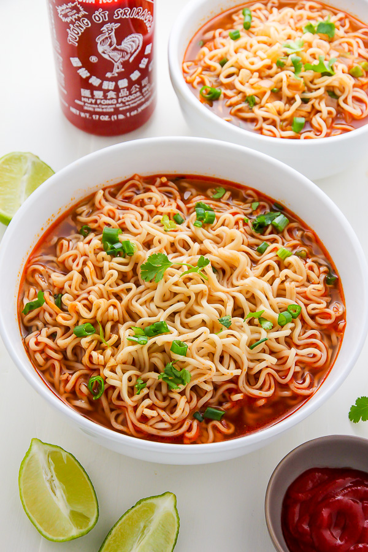
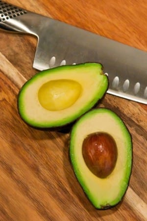

Azizi-Special



This is my daily main meal
Ingredients
- One packet of spicy samyang Ramen noodles
- 3 eggs, u can have as many u want but i prefer 3 so
- 1-2 avocado depending on the circumstances
- Some salt
Steps!
- Start by cooking the eggs, let them boil for 5-6 minutes for coocked but also juicy inside eggs
- Let the eggs be in some cold water while now put the noodles inside the same boiler where u made the eggs and let them
cook while you peel of the egg shells and have them in a cup with a spoon and a little bit of salt
- Now make sure your noodles are soft, when they are soft, remove some water from the noodles and have them in another cup
next to the eggs but with some water remaining, now mix in the spicy falour and have som salt also.
- Now i want you to slice open one to two avocados and have some salt on them and viola, your done!
Bon Apetit!